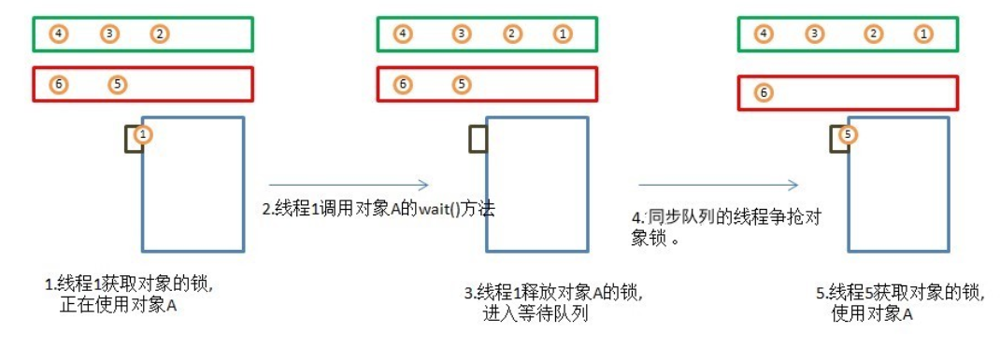

Java多线程的内容很多，本篇文章只是一个概览，许多内容需要另外成文才能梳理清楚
多线程概述
参考文章：
小白科普:线程和线程池
如果把线程当作一个人来对待，所有问题都瞬间明白了
建议先对线程有一个基本的了解，知道操作系统中线程的概念，在学习Java多线程时会比较有帮助
为什么需要多线程？
需要多线程无非就是一个原因，那就是单线程搞不定了，我们可以先联想一个生活中的例子
假如我们走进了一家餐馆，餐馆不大，所以老板为了节省成本，只招了一个厨师，平时大家都点个青椒炒青菜，西红柿炒番茄似乎还没有什么问题，可是今天好死不死，你前面那位兄弟点了一道佛跳墙。。。
Java中的代码是同步执行的，也就是说，你前一行代码不执行完，后面一行代码是不能执行的。
这样的好处是代码非常容易理解，同一时刻，你在执行每一步的时候都知道前面一步返回了什么，但问题是效率很低，非常低。
比如说一个后台服务器，你能想象吗？你每一次向服务器发起一个请求，都一定要等你前面的所有用户都请求都处理完毕了才能轮到你，假如一个请求处理需要1秒钟，同时有10个人访问你的服务器，那你要等10秒，这可才10人啊。。
1 | 接收请求(); |
那么就像餐馆只需要再加几个厨师就可以解决问题一样，我们也只需要再加上几个线程就可以暂时解决问题。每一个用户都有一个专门的线程来执行程序，然后返回结果给用户，这应该没问题了吧（实际上这种方式效率也不算高，虽然响应时间提高了很多，但是10个线程在碰到耗时操作时全部都搁哪儿等着，对于资源也是一种很大的浪费，这里暂且不论）
多线程的适用场景
-
对于CPU密集型操作
单核CPU并不能提升效率，网上有很多例子说计算 1+2+。。。+1000 然后分成10个线程每个线程都计算100个数最后合并就可以提高效率，但如果是在单核CPU下，只不过是CPU从一个线程切换到另外一个线程去计算而已，切换的过程还很费时间，效率不增反降。
举个例子，就好像说上体育课体育老师要统计人数，如果统计的方式就是体育老师一个人在那里挨个数，那同学们从排成1列换成排成10列，并不会让让老师数的更快，老师第一列数到一半然后又去第二列，在不同的队列中切来切去，反而会降低数人的速度。
所以说CPU密集型任务提升的关键是有多个CPU同时计算，也就是多个老师同时来数，才能真正的提高效率，提高的效率就是老师的人数，比如4个老师一起数，效率就能提升4倍（当然，不能完全对照CPU，人家CPU又不是只等着帮你干这一件事情） -
对于IO密集型操作
即使是单核CPU，只要开多个线程也能提高效率，因为当IO操作开始时，和CPU密集型任务不同，CPU并不是一直在计算，而是无事可做，只能等着，所以开启多个线程后，在线程中切换的时间相比等IO的时间则少多了。
还是用体育老师这个例子，这次要随堂测验，要测1班的同学们最多能做多少个俯卧撑（我们假设这些人都是体育健将，至少会做个5分钟的俯卧撑）。老师这次请了一个2班的同学来帮忙，当老师在测验单上写好了第一个人的名字后，就对2班的同学说可以开始了，然后他就会监督你完成一个又一个标准俯卧撑，不标准的都不给你算~。统计完成后，老师会对2班的同学说：“你辛苦了，回去上课吧，期末成绩给你加10分儿~~”
这个过程中，跟统计人数不一样，这时老师其实是无事可做的，而且要等很长时间才能开始下一个测验。
所以老师决定当第一个人在测验的时候，再去请一个2班的同学来帮忙，用同样的方式开启第二个测验（开启了一个新的线程）。
于是老师就在不断的去2班请新的同学来帮忙，记录1班待测同学的名字，开始测验之间来回穿梭（我们假设这个过程只需要几秒钟），但这相比等测验的时间来说都是值得的。
看到这里，你大概会有一些疑问了，为啥要让2班的同学回去呢，以及为什么不一开始就多请几个人呢？能想到这些问题，你已经掌握了后面要讲的线程池的真谛。
去请2班同学来帮忙以及让2班同学回去上课对应着线程的创建和销毁，这个过程虽然相比测验（IO）的时间来说也算短了但是毕竟还是需要花费时间的，所以一开始就多请几个人，并且不让他们做完事情后立即回去，而是继续做下一件事情，避免频繁的创建和销毁线程。就是之后要说的线程池的意义了。
最后一个问题：那一开始请多少人合适呢？你可能会说，那当然是韩信点兵多多益善啦，可事实是:
- 线程也是要占据内存空间的，JVM的内存并不像学校的操场那么大，可以同时容纳那么多线程。
- 即使能容纳，这样也会造成资源的浪费。因为每个人的测验时间并不一样，有的人可能5分钟测完了，有的人可能10分钟还在继续做着呢，那么我为每个人都分配一个2班的记录员则是一种浪费了，例如1班有20个同学，我请10个人来帮忙记录，当有人先测验完了，我就让那个2班的记录员去测其他人则是一种充分的资源利用。
这样相比直接请20个人来肯定是慢一些的，但资源的利用率更高。
所以到底分配多少个线程合适，由于实战经验不多，我暂时也没研究清楚（逃~）
使用多线程
网上已经有很多例子了，这里简单演示一下，就用去餐馆吃饭的例子吧。
我们使用Thread.sleep(2000)来模拟一个耗时的等菜（I/O）操作。
demo
- 单线程版本：
1 | /** |
- 多线程版本：
这里要提一下就是我们不能像单线程中那样直接统计耗时，因为main线程并不会等你其他线程都结束了才打印，所以这里用了一个比较笨的办法，新开了一个线程，无限循环，判断其他线程是否结束，如果都结束了，打印耗时，退出循环。
1 | /** |
线程里都存了些什么？
子线程和主线程（main）没有什么区别，他们都存储了方法栈，也就说方法的局部变量都是隔离的，但是他们是共享JVM堆中的对象的。
子线程是什么时候结束的？
和主线程一样，方法执行完了就结束，对于多线程而言就是执行完了Run方法就结束
多线程带来的问题
多线程确实大大提高了我们的效率，但并不是什么问题都没有，否则Java也不会专门弄一个JUC(java.util.concurrent)包来解决并发问题了
多线程主要的问题就是对于共享资源的操作上
一个小例子
比如说现在有一个原始的车站，准备卖票，但他们并没有车票系统，只有一块供旅客看的大屏幕，屏幕上显示了不同车次的剩余车票数，车票数的更新需要人工操作。
假设现在一共有100张1111车次的票。分别由两个售票员（A和B）进行售卖，一人50张，他们面前排着长长的队。
当一位旅客在A处买完车次为1111的票后，售票员A回头看了一下大屏幕，车票数量还剩100张，于是他思考了一下，100 - 1 = 99，于是他按下手中的机器，将数量更新为99张。
但是当售票员A还在思考100-1等于多少，或者说思考完了，正准备将99输入机器的时候，售票员B也卖出了一张票，回头看了一下大屏幕，恩，还剩100张车票，于是他和售票员A进行了相同的操作。
问题是不是已经呼之欲出了，明明卖出了2张票，但最后大屏幕上显示的却是99张，这就是因为回头看屏幕拿到当前车票数，进行计算，回写数据这三个步骤并非原子性操作。
在Java中有一些操作在多线程下很容易出现这样的情况
- i++
- if then do
下面用代码举个小例子
代码demo
目的，随机生成一个5以内的数字，如果map中不存在就put进去
1 | public class Thread_Sync { |
最后生成的结果并不如我们所愿，并且每次执行的结果都不同，相同的元素可能会被重复很多遍。
1 | 0 |
对于如何解决这个问题，Java 提供了原生的synchronized和JUC(java.util.concurrent)工具包，但在此之前我们可以先了解一下线程的状态，对于其中的资源锁如果不了解的话可以先跳过，在synchronized小节中再回来看
线程的状态
操作系统中的线程状态：
start 、ready、running、waiting、terminate
Java中的线程状态：
1 | public enum State { |
BLOCKED: 等着抢资源锁
WAITING: 压根没机会去抢资源锁，除非被唤醒，重新再抢资源锁(Object.wait/Thread.join)
TIMED_WAITING: wait一个具体的时间，然后自动被唤醒(Thread.sleep(ms),Obejct.wait(ms),Thread.join(ms))
对于等待队列（WAITING），同步队列（Blocked），对象，对象锁，十分建议看看上面线程状态详解博客中的等待队列图解：

哪些操作会释放对象锁？
Object.wait()会释放对象锁
Thread.sleep()不会释放对象锁，所以我们经常在方法体内使用Thread.sleep()方法来模拟I/O操作
synchronized
synchronized是java原生的用来解决并发问题的方法。我们只需要在访问共享资源的方法中加上一把锁（使用synchronized），就可以实现同步:
-
- 对于上面那个例子我们只需要在run中加一个synchronized即可
1 | @Override |
synchronized到底锁住了什么？
锁住的是对象，我们在线程的共享资源上加一把锁，只有拿到这把锁的线程才能执行synchronized块中的方法，至于哪个线程能够拿到则是由CPU调度自己去决定的。（结合上面那个等待队列图去看）
-
- 其实我们并不一定要把被修改的资源（map）当做锁，任何一个Object对象都可以被当成锁，只要它是所有线程的共享资源就可以了,可以再回头去看看那个等待队列的图
1 | public class Thread_Sync { |
重点看加入的lock这一部分，我们只是new 了一个Object，但因为它是所有线程所共享的资源，所以它完全可以作为锁
-
- 我们也可以在方法上加synchronized或者使用synchronized(this),将实例对象本身当成所有线程的共享资源并加锁
1 | @Override |
-
- 对static方法加锁，锁住了Class对象，把类对象当成是线程所共有的资源
1 | public class Thread2_Sync2 { |
最后打印结果（部分结果）：
1 | 开始 |
如果不加synchronized(每次的结果都不同，但都不会按照我们的预期执行)：
1 | 开始 |
最后： 加锁是一个很昂贵的操作，因为加锁之后，同一时间只能有一个线程来访问这段被锁住的代码，实际上就变回了类似单线程一样，我不执行完你就别想执行。所以 锁到底应该加在哪段代码中则需要我们进行思考，例如说run方法中并不是所有的代码都需要被锁住，只有map的if-else那一段才会出现问题，所以有时直接在run方法上加synchronized并非好的方案。
但是，synchronized在并发情况下的性能会比较低，所以Java在后期提供了JUC工具包使用各种方案，既简化了操作，也提升了性能，例如concurrentHashMap的分段锁，实现了CAS(compare-and-swap)的一系列原子类例如AtomicInteger(属于 java.util.concurrent.atomic)，我们在使用时，在搞清适用场景的情况下，应该尽量去使用这些成熟的并发类（当然，适用场景我是还没搞清楚的~~）
ThreadLocal
理解Java中的ThreadLocal
深入浅出多线程-ThreadLocal类使用
文章已经写的很详细了，这里稍稍总结一下：
- ThreadLocal，顾名思义就是线程局部变量，也就说它跟方法内部的局部变量很像，都是线程所独有的，但不ThreadLocal并不是存在方法栈中，而是也存在Java堆中
- 为什么要使用ThreadLocal呢？
ThreadLocal 并不是为了解决并发问题而存在的。
你想啊，资源都线程独有了，还共享个啥呀，并发问题就是在操作共享资源时才会出现的。
以下内容来自上面的深入浅出多线程博客
那ThreadLocal有什么作用呢？如果只是单纯的想要线程隔离，在每个线程中声明一个私有变量就好了呀，为什么要使用ThreadLocal？
最常见的ThreadLocal使用场景为用来解决数据库连接、Session管理等。数据库连接和Session管理涉及多个复杂对象的初始化和关闭。如果在每个线程中声明一些私有变量来进行操作，那这个线程就变得不那么“轻量”了，需要频繁的创建和关闭连接。
未完待续 . . .
1. 线程池
为什么要使用线程池，在为什么要使用多线程中举例子的时候已经说明过了，其实比较好理解：
- 线程是要占据内存的
- 线程的创建和销毁都是需要消耗CPU资源的
为什么要使用线程池比较容易理解，但难的是Java中有许多不同种类的线程池，以及各种各样的参数，要搞清每一种参数的意义以及不同线程池的适用场景则是学习线程池的重点。
参考文章：线程池开门营业招聘开发人员的一天
2. JUC包
这是Java的并发工具包 ，即java.util.concurrent,这个包中有许多方便的工具类
这个包中的工具类实在太多了，所以这里暂且记录一下，之后再进行补充。
- Lock/Condition （升级版的synchronized）
- BlockingQueue
- CountDownLatch
- Future
- ForkJoinPool
- AtomicInteger
Java 8 中的 parallelStream （不属于JUC包）